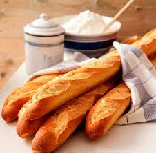

Styles of bread
Many places in our world have their own style of baking for example, France. The breads I have shown so far have French origins. France is known for their pastries and pastry-like breads, but they are also known for arguably their most famous bread. The baguette.

The baguette is widely described as a crusty bread with a soft interior.
Styles of bread however are not restricted to countries and cultures.
They are reminiscent of the technique used to prepare the dough.
- Sourdough Breads
A rustic bread with a hint of a sour taste to it.

- Enriched Breads
A bread that contains a high fat content, due to its ingredients (eggs, butter, milk, etc.)

- French Breads
Known for their crusty exterior or flaky exterior in terms of pastries.
- Italian Breads
Breads that are chewy and have a crusty exterior.

There are many styles of bread with their own nuances and if you are
interested in either of them, I implore you to do your own research.